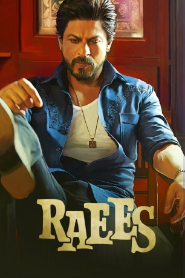

#6742 Raees
 
 IMDB-Wertung: 6.9 / 10
IMDB-Wertung: 6.9 / 10  Tomatometer: 67
Tomatometer: 67  Metascore: 0
Metascore: 0 
The film is set in the early 80's and 90's in Gujarat. The fictitious story of a man who builds an empire in the state of Gujarat, the only state that still follows prohibition. It's a story about his rise and his relationships, which help him become the single most powerful man in the state.
Jahr: 2017
Dauer: 143 Minuten
FSK:
Land: Indien Studio: Rapid Eye MoviesTonspuren:
Untertitel: Deutsch,
Auflösung: 720p (1280x536) Größe: 3696 MB
Genre: Action, Thriller, Drama, Krimi
Regisseur: Rahul Dholakia
Drehbuch: Rahul Dholakia
Soundtrack:
Darsteller:
- Sheeba Chaddha als Raees's Mother
- Atul Kulkarni als Jairaj
- Mohammed Zeeshan Ayyub als Sadiq
 Shah Rukh Khan als Raees
Shah Rukh Khan als Raees- Anil Mange als Qasim Mechanic
- Narendra Jha als Musa Bhai
- Jaideep Ahlawat als Nawab
 Nawazuddin Siddiqui als IPS Majmudar
Nawazuddin Siddiqui als IPS Majmudar- Mahira Khan als Aasiya
- Ravi Verma als Salim Shooter
- Sanjay Gurbaxani als Comissioner
- Sunny Leone als Laila
- Uday Tikekar als Pashabhai
- Menaka als Mohalla Woman 2
- Raj Arjun als Ilyas
- Shubham Chintamani als Young Raees
- Shubham Tukaram als Young Sadiq
- Dhanveer als Young Rasul
- Yug als Young Taufiq
- Sagar als Young Kalupor
- Loveleen Mishra als Ratna Madam
- Utkarsh Mazumdar als Dr. Sajanwala
- Prasoon Narayan als Constable, Gandhi Ashram
- Avinash Razdan als King George, Compounder
- Nishad Raj Rana als Officer, Ilyas's Raid
- Ashok als Constable, Ilyas's Raid
- Mahendra Shrivas als Chandu
- Nalneesh als Lalji
- Bhagwan Tiwari als Inspector Devji
- Pranay Narayan als Ramnikbhai
- Shahnawaz Pradhan als Ujjwalbhai
- Pawan Singh als Lallah
- Dharam Singh als Musa's Goon 1
- Baljinder Singh als Musa's Goon 2
- Akash Sisodia als Musa's Goon 3
- Rajesh Barsewal als Jairaj's Driver
- Kundan Roy als Kalupor - Raee's Punter #1
- Ashutosh Jha als Rasul - Raee's Punter 2
- Sunil Upadhyay als Taufiq - Raee's Punter 3
- Fareed als Eijaz - Raee's Punter 4
- Akshay Verma als Hansmukh Shah
- Pramod Pathak als Chief Minister
- B. Shantanu als Home Secretary
- Suparna Marwah als Aasiya's Mother, Ammi
- Harshad Kumar als Inspector Patel
- Bimal Trivedi als Narol Chowkdi Truck Driver
- Karthik Chauhan als Ruffian 1
- Saharsh Kumar Shukla als Popat
- Anurag Arora als Damla
- Arihant als Police Station Cop 1
Datei: X:\2017(N-Z)\Raees (2017, FSK, 1280x536).mkv seit 11.08.2017
Festplatte: HD 2017(A-Z)-2018(A-F)
 Es gibt insgesamt 170 Filme in der Gruppe '2017(N-Z)'
Es gibt insgesamt 170 Filme in der Gruppe '2017(N-Z)'